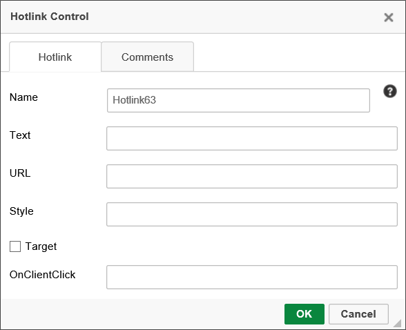

The Sysvar control enables you to enter a system variable to display any system variable information you'd like to display on a Form.

The System Variable property accepts the syntax of the system variable, complete with Curly Brackets, e.g., {CURR_USER}.
The Label property is the text of the placeholder label that will appear when you place the control on the Form page.
The Label control adds a piece of text to the Form that can be dynamically changed by accessing it via the control name.

The Label configuration properties can be accessed by double clicking the label control in the form builder. You can configure the label’s name, its default text, and its CSS styling, if any.
Labels used for accessibility purposes must use the Associated Control ID property to specify the Name property of the data entry control that should be associated with the label. At run-time, the Label will be associated with the specified data entry control for ADA Compliance.
The Routing Slip shows the path that a Form has taken through a process. An optional signature image file can be associated with a user ID causing it to be displayed next to their name in the routing slip when they complete their task. You can upload a signature for each user in the User Administration section of the system. It is recommended that a GIF or PNG file be used with a transparent background so the image can be displayed on web pages with different color backgrounds. If a signature file is found it is automatically displayed anytime the Routing Slip is viewed. Below is an example of how an actual Routing Slip will appear on a working form.

To add a user’s signature to the database, see the User Administration documentation. At design time, the Routing Slip will be represented as an image of a sample routing slip when you are building the Form.
When an activity/step is completed by an automated result condition based on "First Result Met", the Routing Slip will include that result name in for each of the users that did not complete the task. It will still identify them as being not required to complete the step/activity, but the result will be indicated.
There are two primary configuration tabs for the Routing Slip

The following properties are available for configuration on this tab.
The Name of the control. This property must conform to the regular naming conventions for any Form field.
Entering the name of a Process Timeline in this property will restrict the results to the specified Process Timeline.
Entering the name of a Process Timeline Activity in this property will restrict the results to the specified Activity.
Entering the name of a Workflow in this property will restrict the results to the specified Workflow.
Entering the name of a Workflow in this property will restrict the results to the specified Workflow.
If you specify text in the Only Result textbox, then only steps whose results match the specified text will display on the routing slip.

A Routing Slip can be configured to show a number of different information fields, all of which can be configured on this tab. The default configuration is shown above. For most use cases, the default configuration displays what you would like to see, so changing the default configuration will probably be fairly rare. The following properties may be configured.
For Process Director v5.26 and higher, delegation that occurs from a disabled user will be noted on the routing slip, in addition to the normal delegation information.
Generally only applicable to processes that use iterative steps, checking this property will display only the most recent iteration's results. The default behavior is to show ALL iteration results.
Checking the box will display the currently running activities in the Routing Slip.
Checking the box will display the currently Pending activities in the Routing Slip.
Checking the box will display any task reassignments in the Routing Slip.
Checking the box will display the time an event occurred, in addition to the date.
Checking the box will display the Routing Slip header.
Checking the box will display the name of the Process Initiator.
Checking the box will display the pictures of the participating users. This will, of course, require that the users have a picture image uploaded to their user account in Process Director.
Checking the box will display any notification tasks, in addition to the user tasks that display be default.
Checking the box will display the predicted path the process will take. For processes that rely on ad-hoc decisions for task assignments or branching, this may not be reliably accurate, for obvious reasons. For more formalized process structures however, this property will enable the Routing Slip to show the predicted paths and predicted start dates of the subsequent activities, based on the past performance of the process.
Checking the box will display the signature images of the participating users. This will, of course, require that the users have a signature image uploaded to their user account in Process Director.
Checking the box will display all completed activities.
Checking the box will display all canceled activities.
Checking the box will display all activities that were ended by timing out.
Checking the box will display the current status of all activities.
Checking the box will display only information about the currently active Workflow Step.
Checking the box will display the activities for any subprocesses to which the current process is the parent process.
Checking the box will display all activities that were skipped as "Not Needed".
Checking the box will display activities for any process that is called by the current process, and which has run, or is running, asynchronously.
Checking the box will display all completion comments for the activities.
Checking the box will display all activity results.
Checking the box will display the completion date for all completed activities.
Checking the box will display all activity participants.
Checking the box will display all workflow steps.
Checking the box will display only the currently active Timeline Activities.
Checking the box will display all activities for the process which called the current process as a subprocess.
Checking the box will order the activities from the most recently completed to the oldest completed activity. This is the reverse of the normal order.
Checking the box will display all Wait tasks, in addition to the User activities.
The HTML Code control allows you to insert an HTML code snippet into the Form definition. You can include system variables in the code snippet, and Process Director will parse them properly. The control has a character limit of 5,500 characters, so if you have a lengthy HTML snippet, you should break it up across multiple HTML controls to ensure that you don't exceed the character limit.

 If your inserted HTML includes { or } characters, you must leave the control's Name property blank. Otherwise the "{" and "}" characters will be interpreted as System Variables.
If your inserted HTML includes { or } characters, you must leave the control's Name property blank. Otherwise the "{" and "}" characters will be interpreted as System Variables.In addition to normal HTML, you can include JavaScript. So, to send an alert that greets the user, you could say:
If you create a JavaScript function called “bpUserJavaScript” and put it on the form inside an HTML control - it will run on the initial Form Load and all Postback events, enabling you to insert JavaScript into these events.
This feature enables you to insert complicated client-side JavaScript that sets a control's state on Postback. In the example below, a notional Form has a Checkbox control that is set as en event field to fire the Postback. On Postback, the bpUserJavaScript function runs to control the state of the Checkbox .
You can also place ASP.NET server –side controls in this tag. For example:
Server-side ASP.NET controls also act as normal BP Logix form fields, allowing you to reference them with System Variables and through Process Director. You can place an HTML control on a Form, leave the Name property blank, then place the ASP.NET control markup in the HTMLString Property. Entering a Name for the HTML control will cause Process Director to treat it like a Process Director Control and override the ASP.NET control. Leaving the Name property blank will cause Process Director to take the HTML markup for the ASP.NET control, and display the ASP.NET control in the Form. By wrapping a native ASP.NET control in an unnamed HTML control, Process Director supports the use of any native ASP.NET control on a Form.
You can stylize your HTML with CSS, either in the tag you want to stylize or in a separate <style> tag.
To use the ASP.NET controls, you must have Process Director v3.5 or higher.
Knowledge view controls allow you to display a knowledge view within a Form, or within a popup window.
The properties window allows you to configure the name of the control, as well as its width and its height (either as percentage points or pixels). The “Type” dropdown can be set to Iframe or Pop-Up. If “Type” is set to Iframe, the Knowledge View will display inline, on the Form. If it is set to Pop-Up, the Knowledge View will be displayed in a pop-up window. You can also send QueryString parameters to the Knowledge View.

To specify which Knowledge View this control will display, in the Form “Properties” page on Process Director, set the default value of this control to the content item for the Knowledge View you want displayed.
QueryString Parameters can also be set in the QueryString Parms property, as described in the KView control tag section of this document.

The hotlink control creates a link to a specified URL. These are often placed in emails to link the user to the task he needs to complete. As such, one will usually set the hotlink’s URL dynamically using System Variables.

In the hotlink control’s properties window, you can set the name of the hotlink, the text displayed to the user, the URL the user is directed to, the CSS style of the link, and the JavaScript function triggered when the user clicks on the link. You can optionally make the hotlink open in a new window.

The Text property sets the text displayed on the form.
The URL property sets the URL to which the hotlink control will link.
The Style property determines CSS styling for the link.
The OnClientClick property specifies JavaScript code to be executed when the user clicks on the link. It must be encased in quotation marks.
The Image Control inserts an image at a specified URL into the Form.

The Image URL field specifies the URL at which the image can be found. If text is entered in the URL field, the image will redirect the user to that URL if the image is clicked on. You can check the checkbox to open the link in a new window.
The image can also be stylized using CSS, and its height and width can be set in pixels.
The “Calculation” Form control displays a number that is the result of a calculation involving any combination of the values of Form controls, constants, and the multiplication, division, addition, and subtraction operators (“*”, “/”, “+”, and “-“ respectively).
In the Online Form Designer, the calculate control will look like the following, though only the number will be displayed to the Form user:


Name: The name of the control.
Formula: The mathematical formula that produces the calculation.
FormatString: The built-in .NET Format String used to format the result. For the syntax of the available .NET Format Strings, please refer to Microsoft's MSDN documentation topic for Standard Numeric Format Strings.
Style: A CSS style tag to format the control, e.g., "font-weight: bold;"
The algorithm can incorporate system variables and form fields. For example, to add the value of two form fields, use the following equation, substituting the appropriate control names:
{#FORM:fieldA} + {#FORM:fieldB}
The Date Difference control displays the number of days, hours, minutes, etc., between two dates.

There are three attributes that must be provided to enable the control to display the proper value in the Form:
When properly configured, the Date Difference control will display a simple text number reflecting the value of the date difference.
The Lock Form control is used when a form may be opened by more than one user at a time. The Lock Form control ensures that, when one user opens the form, it is locked so that, if a second user opens the form, the second user cannot edit the form until the first user has completed editing. Instead, the second user receives a dialog box notifying them that the form has already been opened for editing by another user.
The Lock Form control allows the user to see whether a form is locked and, if the control is configured to allow it, unlock it.

The properties window of the Lock Form control allows you to set the text shown to the user when the form is locked, and optionally allow the user to unlock the form. It can also be configured to periodically check to see whether the form has been locked after a number of seconds specified in the Polling Seconds property. To put the name of the user who locked the control into the Lock Text text, use the {FORM_LOCK_USER} system variable.

Use of the Scheduler module has largely been deprecated in the product. BP Logix recommends using the Goal object for most scheduled operations that were formerly implemented via the Scheduler Module.The Scheduler control is part of the Process Director Scheduler Module (PDSM), which is used to launch processes (Workflows or Process Timelines) at pre-defined intervals within a specified window of time.

Complete details about the scheduler component are available through the Scheduler Module guide.
The Audit control enables the user to view a history of the controls whose values have changed on the Form, so long as the “Audit Form Changes” checkbox is checked on the Form properties tab in Process Director.

The Audit control’s properties can be accessed by double clicking the control in the Online Form Designer.

You can configure the control’s name, and the text displayed on the button.
Using the Control Name, Step Name, and Activity Name fields, you can filter the audit history to display only Form changes relevant to the specified controls, activities, and steps. For instance, if you set the Activity Name property to "Step 1", then only auditable activities that occur during the activity named "Step 1" will appear in the control at run-time. These three fields can accept multiple values by entering a comma-separated list of items. You can also set any of these field properties to a System Variable, instead of manually adding values to these fields. As an example, you can use a Business Rule to provide these values, and enter the System variable name for a Business Rule in each field, e.g., {RULE:BusinessRuleName}. You could then set the Business Rule to return the step completion date, so that you only capture changes made after that point in the process. Using a Business Rule enables you to change the filter values by editing the Business Rule, instead of re-opening the Form template and modifying the template.
If you check the Show field changes in tooltip... check box, the Audit control will not be displayed at run-time. Instead, audit information will be displayed in a tooltip for the form fields when the user hovers the mouse over the relevant fields.
The Show Report control displays a report in a Form. The Show Report control can display a report in a variety of ways, configurable in the control’s properties.

The properties window allows the user to configure the name of the control, the text the Show Report button displays, and the height and width of the report. It also allows the user to pass QueryString parameters to the report, configuring the data it returns. Separate parameters should be separated by new lines, using the [variable name] = [value] format to specify parameters and their values.

The Type dropdown allows the report to be displayed in the Form in three different ways. The report can be displayed in an iframe in the Form, as a popup, or as an image embedded in the Form by setting the Type property. The image is static, but the data it returns can still be configured using QueryString parameters.
The EmailData control is used in a email notification template to specify the configuration of the email that is sent via task notifications. In addition to the Name property that is common to all controls, the properties for this control are configured on the interface tabs shown below.
 For users of Process Director v5.27 and higher, Process Director enables the use of address strings with a Display Name component (e.g. "Test User <test@example.com>").
For users of Process Director v5.27 and higher, Process Director enables the use of address strings with a Display Name component (e.g. "Test User <test@example.com>").

|
PROPERTY |
DESCRIPTION |
|---|---|
|
Subject |
Subject for email |
|
FromEmail |
If the “FromEmail” address is not filled in on the EmailData tag in the email template, it will be set by the first value that is not empty from the following list: Value configured in IT Admin under “Installation settings” in “Global Variables” Configured in email or Form If Cancelled, Administrator email that performed operation; Workflow Initiator; The “Registered Email Address” in the IT Admin section under Installation Settings; “process-director@bplogix.com”. |
|
FromDisplay |
To configure a “FromEmail” address that contains a display name that is different than the email address, use this property. This will allow you to have a different reply address than the one the user sees. |
|
GroupName |
Only attach documents in the specified group of attached documents. If you don’t specify the GroupName of objects to include in the email, it will send all groups of attachments in the Form. |
| Locale |
An optional string property that accepts a valid .NET locale string, e.g., "en-US" for US English. This value can also be passed through a form field variable, e.g., Normally when an email is sent, it will set the locale to that of the target user. If the user is an anonymous user, the locale will be set to the default locale of the server. If the locale is specified in this property, however, the default behavior will be overridden by this property setting. |
|
CCEmail |
A list of comma separated or semi-colon separated email address that will be CC'd. |
|
BCCEmail |
A list of comma separated or semi-colon separated email addresses that will be BCC'd. |
|
Priority |
Sets the priority of the email. Supports the following values:
|

|
PROPERTY |
DESCRIPTION |
OPTION |
|---|---|---|
|
Add Process Attachments to Email |
This property allows you to send a process attachment as an attachment in the email. You can specify what attachments to send by using a “GroupName” for the object(s) and using the “GroupName” property. |
GroupName |
|
Add Form Attachments to Email |
This property allows you to send a Form attachment as an attachment in the email. You can specify what attachments to send by using a “GroupName” for the object(s) and using the “GroupName” property. |
GroupName |
|
Cancel Email |
Set this property to true when an email does not need to be sent out based on a condition. |
|
|
Plain Text |
Selecting this check box will strip the email of HTML information and transmit it using plain text. This is used sometimes to make emails more legible on PDAs or less advanced operating systems (Mac OS X) receiving email from Exchange servers. |
|
For information on this control's usage in an email template, see the EmailData Control section of the Email Templates documentation.
The Tooltip control will place an icon on the Form page that, when moused over, will display text that you configures in the settings for the control.

The text you place in theText property will appear as a tooltip when the user places the mouse over the tooltip icon ( ) that appears on the page.
) that appears on the page.
The Icon control will place an icon on the Form page.

Use the Icon Number property to specify the icon number to display on the Form.
Other properties, such as the icon's Color or Back Color can also be configured to specify the icon's fore color or back color, respectively.
The CSS Class property enables you to specify a CSS class to use for the icon if you have implemented a custom style sheet.
The Size property will specify the size, in pixels, to display the icon. Icons are square, so a single number will specify both the horizontal and vertical dimensions of the icon.
The Tooltip property specifies the tooltip text to display when the user mouses over the icon.